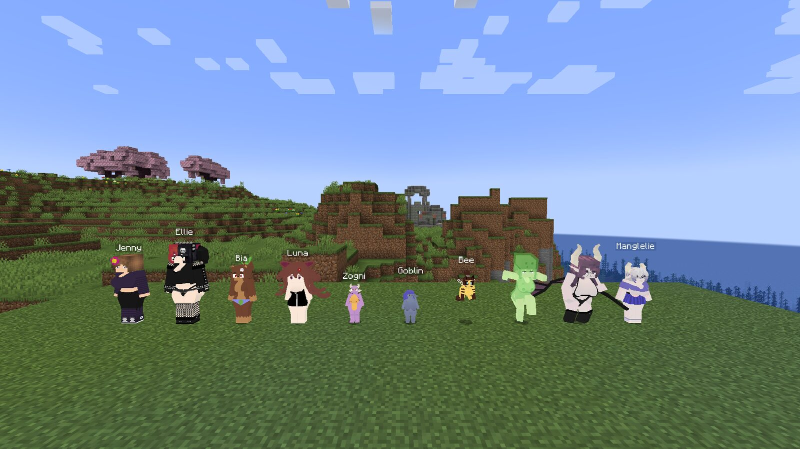
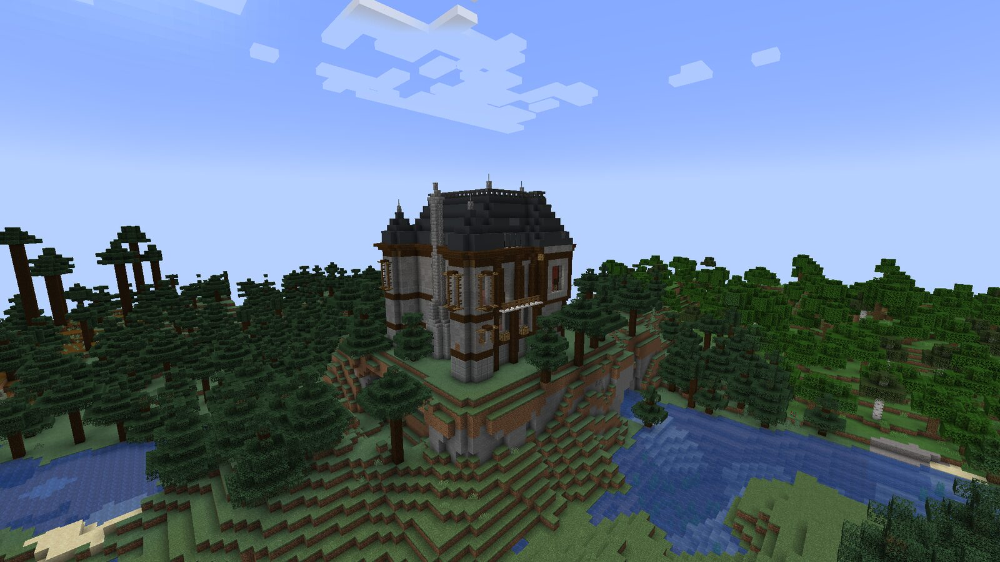
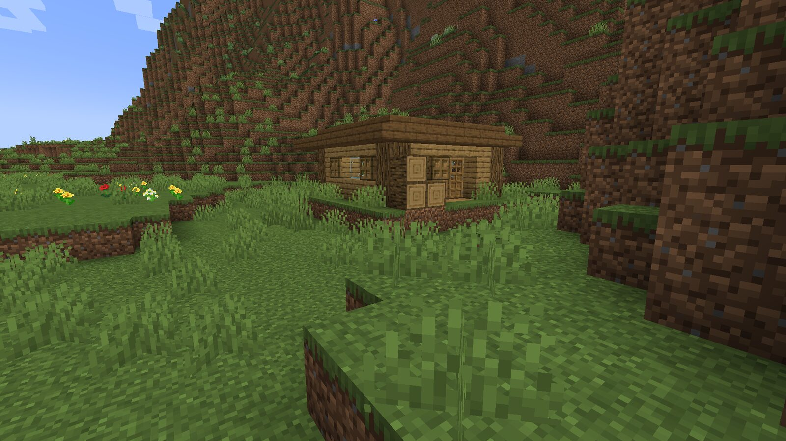
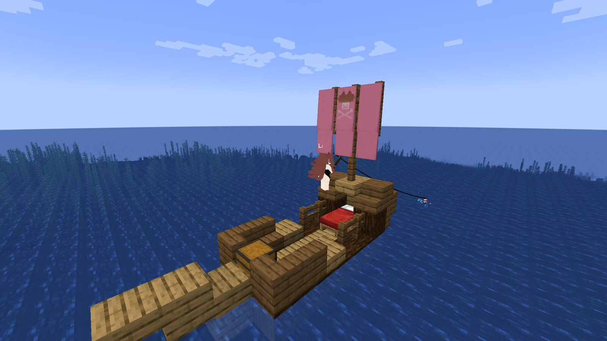
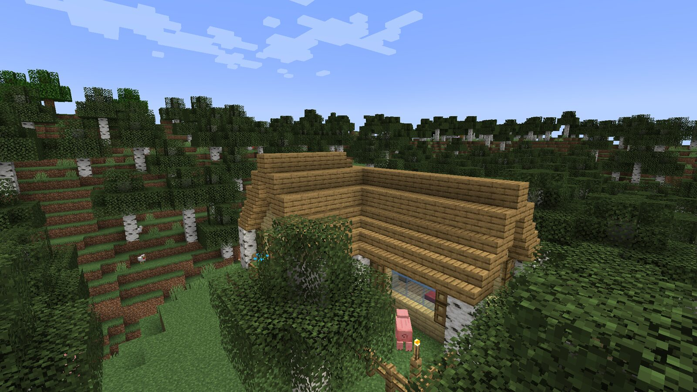
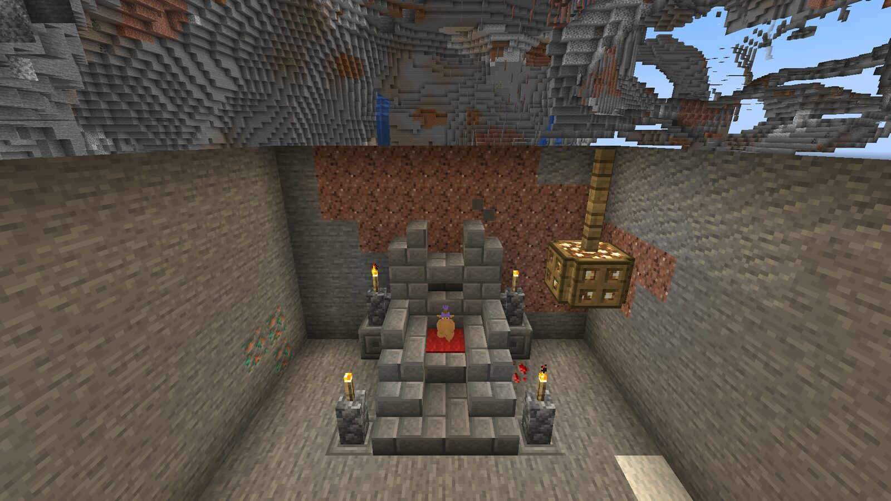
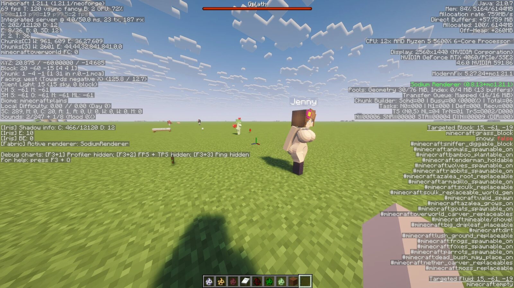
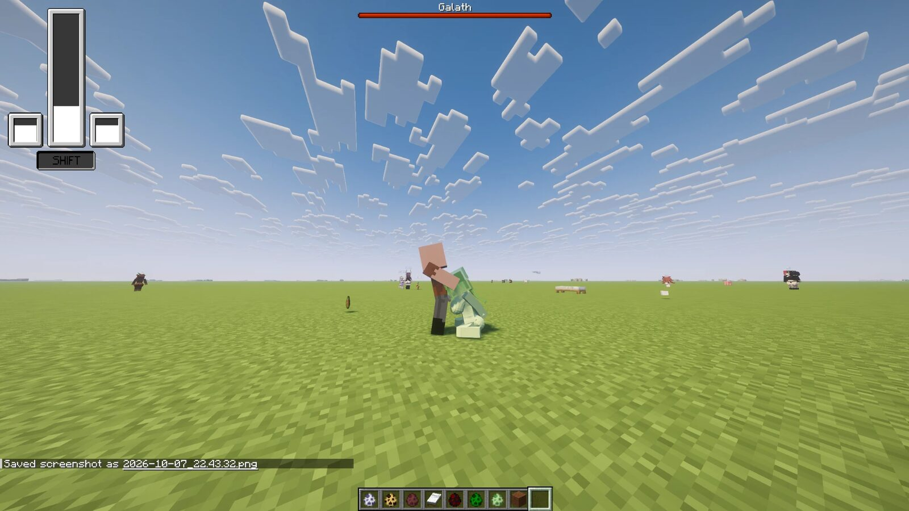
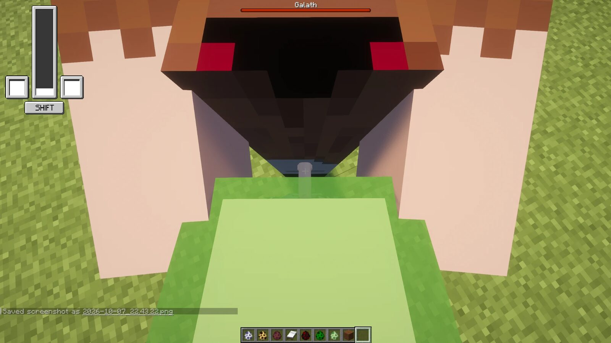

PooPooWumboDoodyCraft
PooPooWumboDoodyCraft
A full rewrite of 1.12.2's FapCraft for modern versions of the game. It aims to be a faithful reconstruction of the original wherever possible, with minor tweaks to bring it into the modern era.
Adults only (18+).
Downloaded times
FeaturesPorted
- Eleven companions with their own AI, menus, scenes, dialogue and sounds: Jenny, Ellie, Bia, Luna, Slime, Bee, Allie, Kobold, Goblin, Galath and Manglelie.
- Kobold tribes, goblin lairs and the Galath boss fight.
- Player-as-girl forms, custom models and clothing, Allie's lamp, the Dragon Staff.
- The original houses and lairs, now real 1.21 structures you can
/locate. - Checked side by side against 1.12.2.
Install3 steps
- Install NeoForge for Minecraft 1.21.1.
- Download the jar from this page.
- Drop it into your
modsfolder and start the game.
OK Minecraft 1.21.1 / NeoForge 21.1.242+ / Java 21
GeckoLib is bundled in the jar. 1.12.2 worlds are not migrated.
ChangelogNewest first
In testingSmoother textures and jiggle physics
Not in the download yet.
- Smoother textures: the blocky pixel shading on hair and clothes becomes soft gradients, while faces, outlines and colour edges stay sharp. The girls no longer flicker and look jagged from a distance.
- Jiggle physics for every girl: chests, butts, tails and ponytails bounce and swing as they move, in scenes too.
- Both can be turned off, and the jiggle made stronger or weaker, in
config/sexmod-client.toml.
2026-11-06Galath riding and goblin fixes
- Galath no longer repeats her kill line over and over after she kills you.
- Riding Galath when she has Manglelie: you can steer from the start (no boost needed first), and she no longer fights mobs while you ride her.
- Boosting into the ground no longer kills you with fall damage.
- No more camera flicker while flying on Galath, and Manglelie no longer pops in and out during a boost.
- A thrown goblin now flies off from your hands instead of hanging in front of you and then teleporting to where she landed.
2026-11-05Dragon Staff
- Beds and chests can be assigned to Kobold tribes with the Dragon Staff again.
2026-11-02Dragon Staff
- The staff no longer stays bound to a tribe whose Kobolds have all died, so you can start a new tribe.
2026-11-01First public release
- A full rewrite of FapCraft 1.12.2 for Minecraft 1.21.1 on NeoForge: all eleven companions with their AI, menus, scenes, dialogue and sounds; Kobold tribes, goblin lairs and the Galath boss fight; player-as-girl forms, custom models and clothing, Allie's lamp and the Dragon Staff; the original houses and lairs as real 1.21 structures.
Screenshots9


















Credits
Made by fartypoopy.
Based on the original FapCraft by ShnurriTV, later carried on by Trolmastercard. This project exists because of their work.